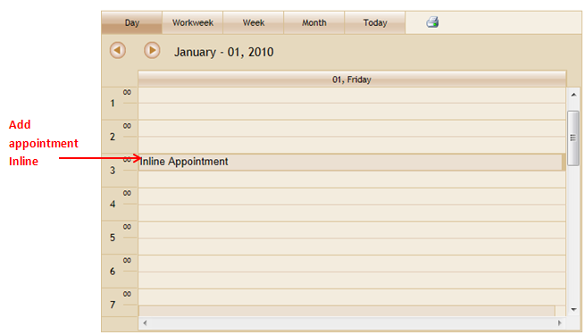
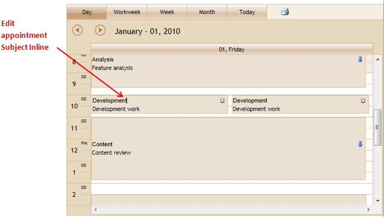

You can add and edit appointments inline, without opening the Add/Edit Dialog.
Appointments added inline will get automatically get the start and end time from the selected work cell. This feature allows you to add/edit appointments with ease.
Use Case Scenario
This feature allows you to add appointments quickly without having to go through the Add/Edit Dialog.
You can edit the subject of appointments just by clicking over the appointment’s subject.
Feature Summary
To add a new appointment:
Using this feature, you would just have to select the required work cell and press the ENTER key.
This will enable you to add a subject for the appointment in question. The post action (which contains the data of the new appointment) is triggered by pressing the ENTER key again. You can save the added appointment using the Save post action.

Figure 106: Adding a new appointment inline
To edit an appointment inline
Editing an appointment would require you to select a specific appointment, select its subject by clicking on it, making the necessary edit, and then pressing the ENTER key.
The post action gets triggered by pressing the ENTER key.
You can save the edited subject in the database, using the EditInline post
action.

Figure 107: Editing appointments inline
This makes editing and adding appointments much easier than having to go through the dialog box every time.
Property to enable inline appointments
|
Property |
Description |
Type of property |
Value it accepts |
Dependencies |
|
AllowInline |
This property allow user to Add/Edit Appointment Inline |
bool |
True False |
NA |
 Enabling Inline
Appointments
Enabling Inline
Appointments